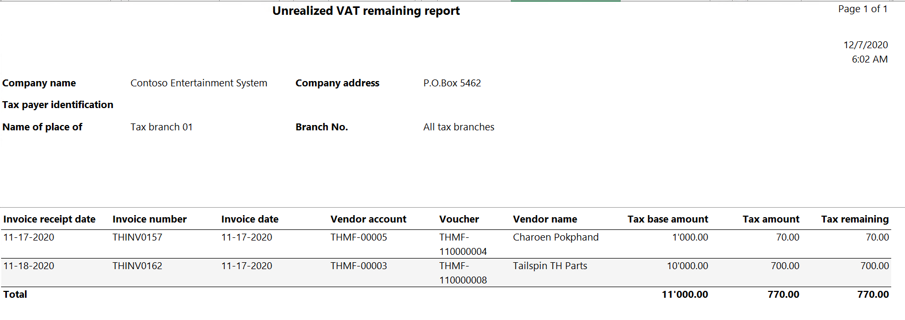
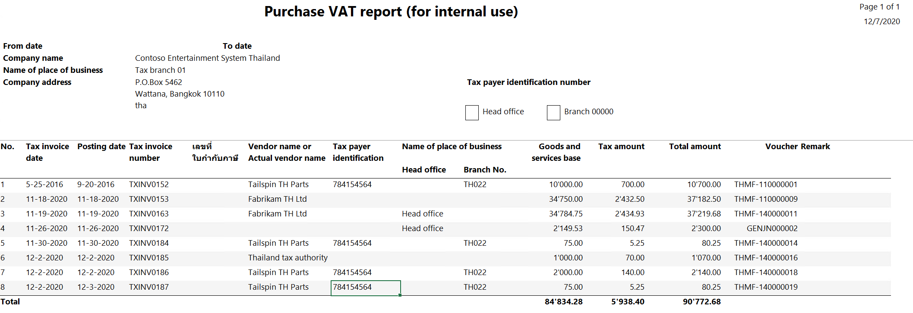
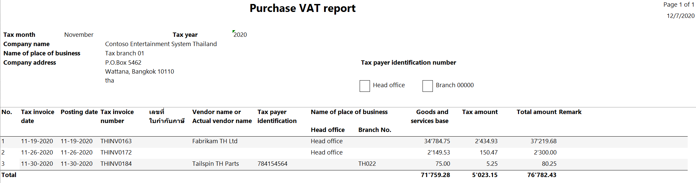
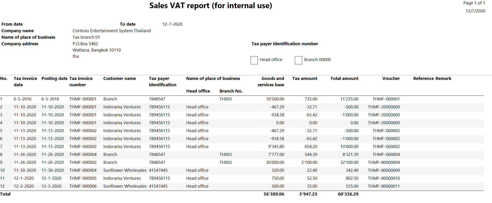
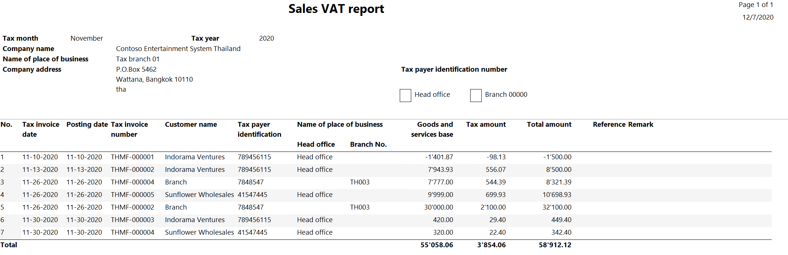

Sales VAT report
[!include[banner](../includes/banner.md)]This topic describes the reports in Microsoft Dynamics 365 Finance that you can use to submit information about value-added tax (VAT) amounts for sales and purchases to tax authorities in Thailand.
Generate the Purchase unrealized VAT remaining report
The Unrealized VAT remaining report includes transactions that taxes haven't been realized for.
Go to Tax > Inquiries and reports > Sales tax reports > Purchase Unrealized VAT Remaining.
In the Tax branch code field, select a tax branch to generate the report only for the selected tax branch. For more information, see Tax branch page.
Select OK, and review the report that is generated.

The following table explains the information that is shown on the Unrealized VAT remaining report.
Field Description Invoice receipt date The date when the invoice was received. Invoice number The number of the invoice. Invoice date The date when the invoice is due. Vendor account The number of the vendor account. Vendor name The name of the vendor account. Voucher The voucher number in the ledger. Tax base amount The base amount for tax calculation. Tax amount The calculated tax amount. Tax remaining amount The tax amount that isn't due.
Generate the Purchase VAT report (for internal use)
Two versions of the Purchase VAT report are available. One version is for internal use only, and the other is submitted to the government.
The Purchase VAT report for internal use includes transactions that purchase VAT is realized for. It also includes details of the VAT that the legal entity paid for the purchase of goods and services. This report is used internally to review the transactions for a specific period. It isn't submitted to the government.
Go to Tax > Inquiries and reports > Sales tax reports > Purchase VAT report (for internal use).
In the Start date and End date fields, define the period to generate the report for.
In the Tax branch field, select a tax branch to generate the report only for the selected tax branch. For more information, see Tax branch page.
In the Sales tax code field, select a sales tax code to generate the report only for the selected sales tax code.
In the Tax invoice number field, enter the number of a tax invoice to generate the report only for the specified tax invoice.
In the Tax invoice date field, select the date when the vendor generated the tax invoice.
Select OK, and review the report that is generated.

The following table explains the information that is shown on the Purchase VAT report for internal use.
Field Description Tax invoice date The date when the invoice was received. Posting date The date when the transaction was settled. Tax invoice number The number of the tax invoice that was received from the vendor. เลขที่ใบกำกับภาษีต้นฉบับ (Original tax invoice number) The number of the original invoice. Vendor name or Actual vendor name The name of the vendor account. Tax payer identification The vendor's identification number for tax purposes. Name of place of business – Head office The value Head office is shown if the transaction was settled by using the Head office tax branch. Name of place of business – Branch No. The number of the tax branch that was used during the transaction. Goods and services base amount The base amount of the transaction. Tax amount The calculated tax amount. Total amount The total amount of goods and services. This amount includes calculated tax. Voucher The number of the voucher for the transaction.
Generate the Purchase VAT report
The Purchase VAT report includes transactions that purchase VAT is realized for. It includes details of the VAT that the legal entity paid for the purchase of goods and services. This report is generated every month and submitted to the government.
Go to Tax > Inquiries and reports > Sales tax reports > Purchase VAT report.
In the Tax month field, select the month to generate the report for.
In the Tax branch field, select a tax branch to generate the report only for the selected tax branch. For more information, see Tax branch page.
In the Sales tax code field, select a sales tax code to generate the report only for the selected sales tax code.
In the Tax invoice date field, select the date when the vendor generated the tax invoice.
In the Tax invoice number field, enter the sales tax code that the report should include transactions for.
Select OK, and review the report that is generated.

The following table explains the information that is shown on the Purchase VAT report.
Field Description Tax invoice date The date when the invoice was received. Posting date The date when the transaction was settled. Tax invoice number The number of the tax invoice that was received from the vendor. เลขที่ใบกำกับภาษีต้นฉบับ (Original tax invoice number) The number of the original invoice. Vendor name or Actual vendor name The name of the vendor account. Tax payer identification The vendor's identification number for tax purposes. Name of place of business – Head office The value Head office is shown if the transaction was settled by using the Head office tax branch. Name of place of business – Branch No. The number of the tax branch that was used during the transaction. Goods and services base amount The base amount of the transaction. Tax amount The calculated tax amount. Total amount The total amount of goods and services. This amount includes calculated tax.
Generate the Sales VAT report (for internal use)
Two versions of the Sales VAT report are available. One version is for internal use only, and the other is submitted to the government.
The Sales VAT report for internal use includes transactions that sales VAT is realized for. It also includes details of the VAT that the legal entity received for the sale of goods and services. This report is used internally to review the transactions for a specific period. It isn't submitted to the government.
Go to Tax > Inquiries and reports > Sales tax reports > Sales VAT report (for internal use).
In the Start date and End date fields, define the period to generate the report for.
In the Tax branch field, select a tax branch to generate the report only for the selected tax branch. For more information, see Tax branch page.
In the Sales tax code field, select a sales tax code to generate the report only for the selected sales tax code.
In the Tax invoice date field, select the date when the vendor generated the tax invoice.
In the Tax invoice number field, enter the sales tax code that the report should include transactions for.
Select OK, and review the report that is generated.

The following table explains the information that is shown on the Sales VAT report for internal use.
Field Description Tax invoice date The date when the invoice is due. Posting date The date when the transaction was settled. Tax invoice number The number of the tax invoice that was received from the vendor. Customer name The name of the customer account. Tax payer identification number The customer's identification number for tax purposes. Name of place of business – Head office The value Head office is shown if the transaction was settled by using the Head office tax branch. Name of place of business – Branch No. The number of the tax branch that was used during the transaction. Goods and services base amount The base amount of the transaction. Tax amount The calculated tax amount. Total amount The total amount of goods and services. This amount includes calculated tax. Voucher The number of the voucher for the transaction.
Generate the Sales VAT report
The Sales VAT report includes transactions that sales VAT is realized for. It also includes details of the VAT that the legal entity received for the sale of goods and services. This report is generated every month and submitted to the government.
Go to Tax > Inquiries and reports > Sales tax reports > Sales VAT report.
In the Tax month field, select the month to generate the report for.
In the Tax branch field, select a tax branch to generate the report only for the selected tax branch. For more information, see Tax branch page.
In the Sales tax code field, select a sales tax code to generate the report only for the selected sales tax code.
In the Tax invoice date field, select the date when the vendor generated the tax invoice.
In the Tax invoice number field, enter the sales tax code that the report should include transactions for.
Select OK, and review the report that is generated.

The following table explains the information that is shown on the Sales VAT report.
Field Description Tax invoice date The date when the tax invoice was received from the vendor. Posting date The date when the transaction was settled. Tax invoice number The number of the tax invoice that was received from the vendor. Customer name The name of the customer account. Tax payer identification number The customer's identification number for tax purposes. Name of place of business – Head office The value Head office is shown if the transaction was settled by using the Head office tax branch. Name of place of business – Branch No. The number of the tax branch that was used during the transaction. Goods and services base amount The base amount of the transaction. Tax amount The calculated tax amount. Total amount The total amount of goods and services. This amount includes calculated tax.
Submit your requests to the Documentation Team